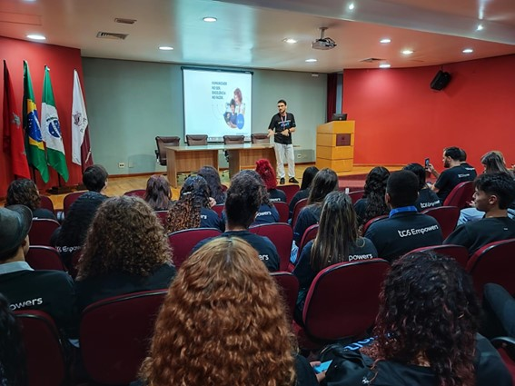

PROGRAMA GOIT NA ESCOLA SOCIAL MARISTA IRMÃO ACÁCIO
Acompanhe como foi o processo de criação de startups realizado pelos estudantes do segundo ano ao longo dos últimos três meses
No dia 9 de novembro, os alunos do segundo ano do ensino médio concluíram o programa Go Innovate Together (goIT), da Tata Consultancy Services (TCS). Com apresentações em formato de pitch, os estudantes foram ao auditório Dom Albano Cavallin, no Câmpus Londrina da Pontifícia Universidade Católica do Paraná (PUCPR), para exibir seus projetos, desenvolvidos entre os dias 14 de agosto e 8 de novembro. No local, também estavam presentes uma representante do Colégio Marista e os voluntários da TCS Londrina, que os auxiliaram durante as primeiras semanas. Ao final, os integrantes receberam certificados de participação.
O goIT é um programa da TCS que tem como objetivo despertar a curiosidade dos estudantes e aumentar sua confidência e empregabilidade, e capacitá-los a projetar e desenvolver soluções digitais inovadoras para problemas comunitários. Ele utiliza técnicas de design thinking e STEM (do inglês, Ciência, Tecnologia, Engenharia e Matemática) para promover a criação de soluções tecnológicas para os Objetivos de Desenvolvimento Sustentável (ODS) definidos pela Organização das Nações Unidas (ONU). A Escola Social Marista Irmão Acácio foi a primeira de Londrina a participar do programa.
Os ODS foram criados pela ONU e adotados por todos os Estados-Membros das Nações Unidas em 2015 e são um apelo global para a paz e prosperidade para as pessoas e o planeta. Composto por 17 metas ambiciosas e interconectadas, os ODS abordam os principais desafios de desenvolvimento enfrentados por países do mundo todo. A intenção é que, até 2030, todos os objetivos sejam alcançados.
Com base nisso, durante as primeiras semanas do programa goIT, os estudantes receberam falas de voluntários da TCS Londrina. Foram seis semanas de palestras, cada uma com palestrantes e tópicos distintos, incluindo “Habilidades STEM”, “Design Thinking”, “UI/UX e Wireframes”, “Prototipação” e mais. Ao término das apresentações, cada turma do segundo ano foi separada em 3-4 grupos, e cada grupo teve de escolher ao menos 1 ODS, pensar em um problema atual que a envolva e criar uma solução tecnológica para tal. Ao todo, foram montados 10 grupos, com projetos e ODS variados.
A partir daí, as próximas sete semanas foram dedicadas inteiramente ao desenvolvimento das ideias pensadas pelos grupos, incluindo levantamento de dados, criação de protótipos, montagem do pitch e ensaio para a apresentação. Durante esse tempo, as aulas de Web Design I, Engenharia de Sistemas Web I, Banco de Dados e Programação Web I foram cedidas para que os alunos pudessem focar em seus projetos.
No entanto, é claro que houve desavenças. Desacordo entre integrantes, mudanças de plano e críticas que botavam em xeque os projetos. Tudo foi experienciado e necessário para que suas ideias fossem ainda mais fortalecidas e se tornassem sólidas, robustas o suficiente para que, na apresentação final, nenhuma pergunta ou elemento surpresa abalasse os grupos.
E o dia chegou. Partindo às 8 horas, os estudantes foram à PUCPR. Acolhidos com café da manhã, todos aproveitaram as comidas enquanto terminavam de se preparar para o grand finale. E partiram às apresentações. Com cerca de 80 pessoas, o evento contou com a participação dos alunos, de uma representante do Colégio Marista da Avenida Maringá, dos voluntários da TCS Londrina, dos professores Cléo Quintiliano e Leonardo Rocha, e do mestre de cerimônias e professor de Artes e Web Design, Eduardo Santilli, que mentorearam os estudantes durante o processo de desenvolvimento dos projetos.
“Microfone, telão e palco mostram o tamanho do impacto desse espaço educacional e projeto. O que ele não mostra — sinto informar — são todas as sutilezas vivenciadas no caminho. [...] Adianto que os maiores projetos apresentados nesse dia serão os projetos de vida, dos estudantes, dos participantes, colaboradores e voluntários”, disse Eduardo. E complementou: “O dia de hoje é como uma pintura, uma imagem bonita, feita por pequenas pinceladas. É praticamente impossível olhar o quadro pela individualidade da pincelada, mas é possível afirmar que a ausência delas impactariam na imagem que temos montada aqui hoje”. “Por isso agradeço a cada detalhe e fico feliz em fazer parte deles”, concluiu.
O goIT, apesar de ser um programa que trabalha bastante as habilidades técnicas, também é de suma importância no desenvolvimento das habilidades sociais (as chamadas hard skills e soft skills, respectivamente). Ao se deparar com obstáculos, como um pitch em atraso ou desagradável, as hard skills até podem ser utilizadas, mas somente as soft skills levarão ao melhor resultado. De nada adianta uma boa apresentação se o relacionamento entre os integrantes do grupo não está bem trabalhado. Apenas em um ambiente saudável pode ser adquirido o crescimento.
Por isso, parafraseando o professor Eduardo, 9 de novembro foi um dia de comemoração. Apesar do nervosismo, dos desafios, das diferenças e do desânimo, todos concluíram o programa, com projetos que foram apresentados lindamente por seus respectivos representantes e aclamados pelos voluntários, professores e demais alunos. Todos superaram seus obstáculos e desacordos, e isso é um sinal de muita maturidade e responsabilidade. Dizem que o que importa não é o destino, mas o caminho, e o resultado desse programa demonstra isso. Ele foi apenas a consequência desse processo todo, uma amostra de tudo que foi vivenciado e o resultado de três meses inteiros de desenvolvimento pessoal. E o final não poderia ser mais lindo.
Em suma, o goIT proveu aprendizados muito ricos, que serão extremamente úteis no futuro, tanto na vida profissional como na vida pessoal. Ao final das apresentações, os integrantes receberam certificados de participação e tiraram diversas fotos, com os mentores, os integrantes de seus grupos, e até com todos os outros participantes do projeto, em um retrato geral. Foi uma experiência única e fortemente recompensadora. Para 2024, os alunos do terceiro ano poderão dar continuidade aos projetos desenvolvidos durante o programa, para seu TCC, se assim desejarem.
Data da Publicação: 13 de dezembro de 2023